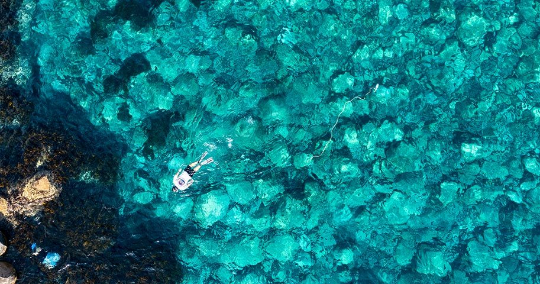
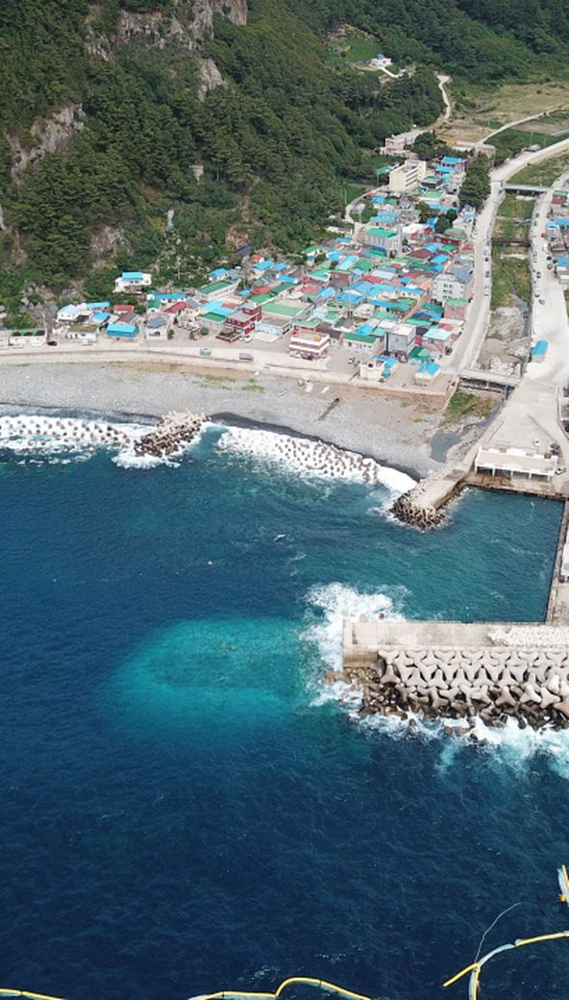
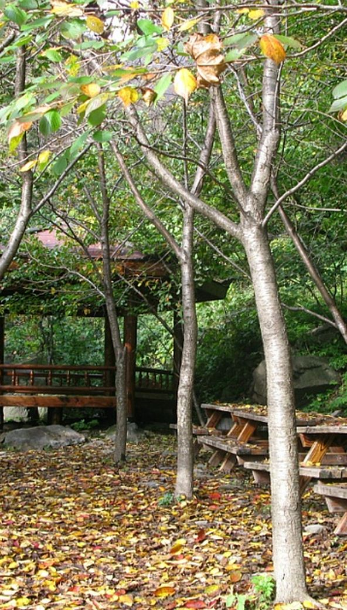
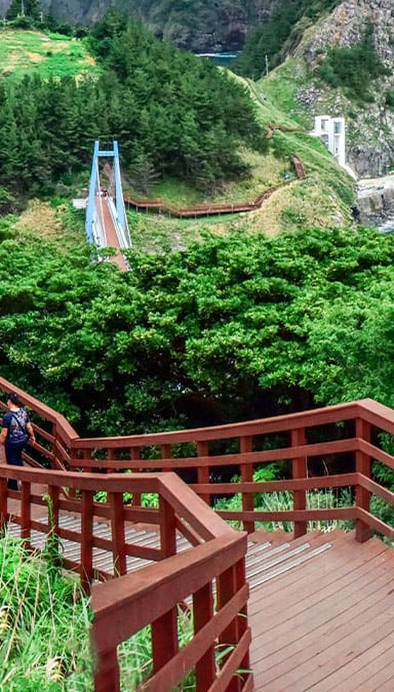
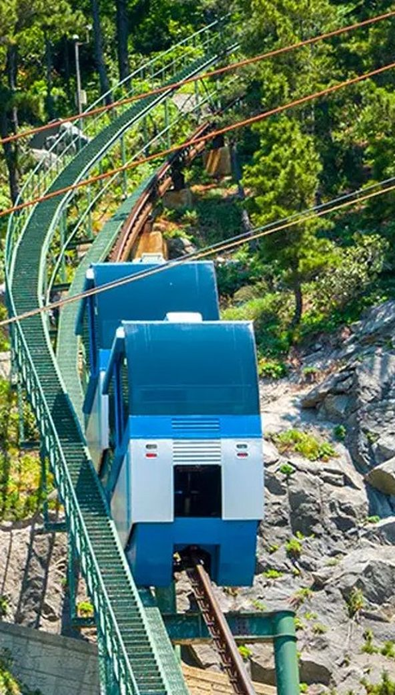

AI가 날씨·혼잡도·뱃길을 분석해 딱 맞는 코스를 추천해드려요 →

섬을 한 바퀴, 창밖이 전부 절경인 44km

기암괴석이 이어지는 북면 해안도로 하이라이트

대풍감 절벽과 노을이 아름다운 서북 해안길

거북 모양 바위와 향나무 자생지, 인생샷 스팟

대풍감 절경 스카이워크

케이블카로 오르는 독도 조망

연도교 건너 무인도 산책

울릉도 유일의 평지 마을

자연산 홍합을 듬뿍 넣어 지은 울릉도 대표 한 끼.

따개비 육수의 시원한 감칠맛, 현지인 해장 코스.

산나물 먹고 자란 약소, 예약하고 가야 하는 집들.

명이·부지깽이·삼나물 한상. 재료 소진 시 마감.

절벽과 바다 사이를 걷는 울릉 대표 산책로.

옛 섬사람들이 걷던 원시림 숲길. 여름에도 서늘해요.

울릉도 최고봉(984m). 나리분지 코스가 완만한 편.

연도교 건너 한 바퀴, 가볍게 걷는 데크길.
오르는 길 자체가 놀이가 되는 케이블카.

천천히 오르는 모노레일과 스카이워크 전망.

절벽 위 정원 산책과 포토존, 아이 걸음에도 무리 없어요.

삼단 폭포와 천연 에어컨 '풍혈', 여름 필수 코스.

세 가지 질문에 답하면 AI가 여행 유형을 진단하고,
딱 맞는 테마 코스를 추천해드려요.
실제 여행자들의 후기를 모았어요. 카드를 누르면 그 여행자가 다녀온 동선을 지도로 볼 수 있어요.
어느 동네에 묵을지부터 골라보세요.


같은 예산으로 울릉도를 더 오래, 더 깊게 여행하는 방법
여객선은 일찍 예매할수록 좋은 시간대와
좌석을 잡을 수 있어요.
숙소·렌터카 요금이 내려가고
명소 대기도 짧아집니다
울릉순환로 노선버스로 주요 명소를
알뜰하게 이동하세요
일정에 하루 여유를 두면
기상 변수에도 든든합니다
출발 전 이것만 챙기면 완벽해요. 체크한 항목은 브라우저에 저장됩니다.
파도에 따라 독도 접안 가능성
정도를 나타냅니다.